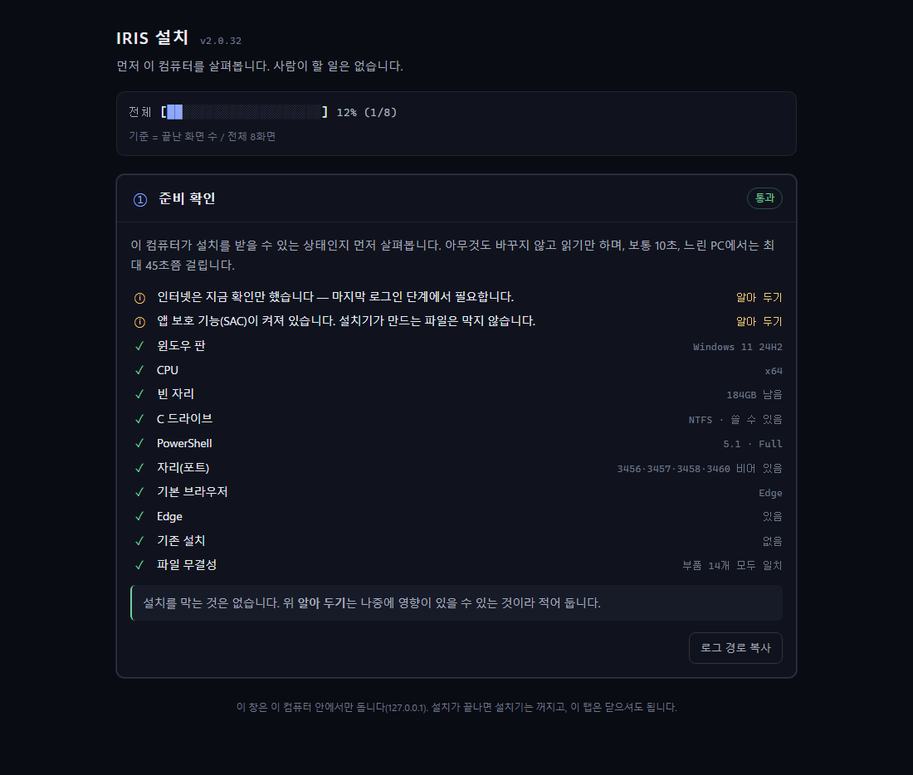
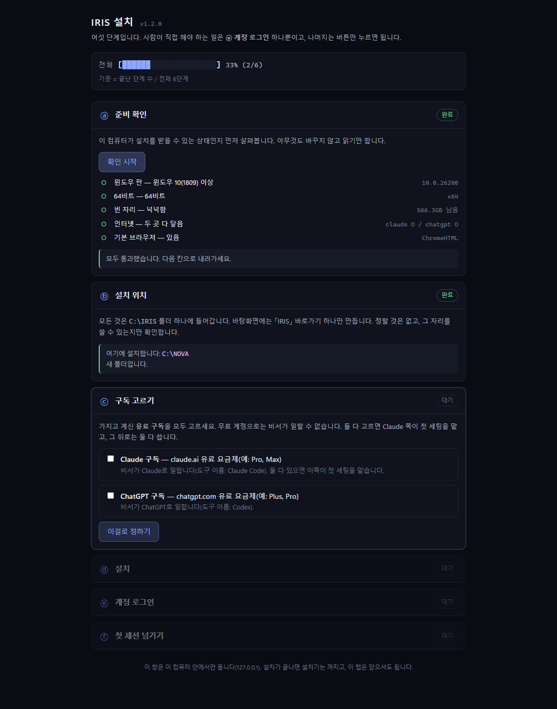
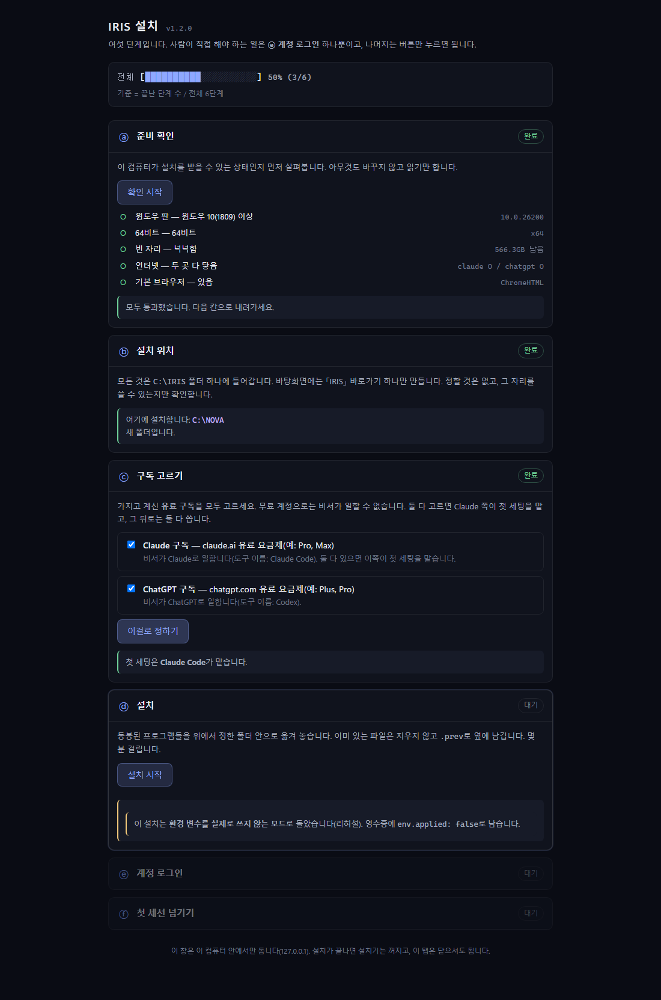
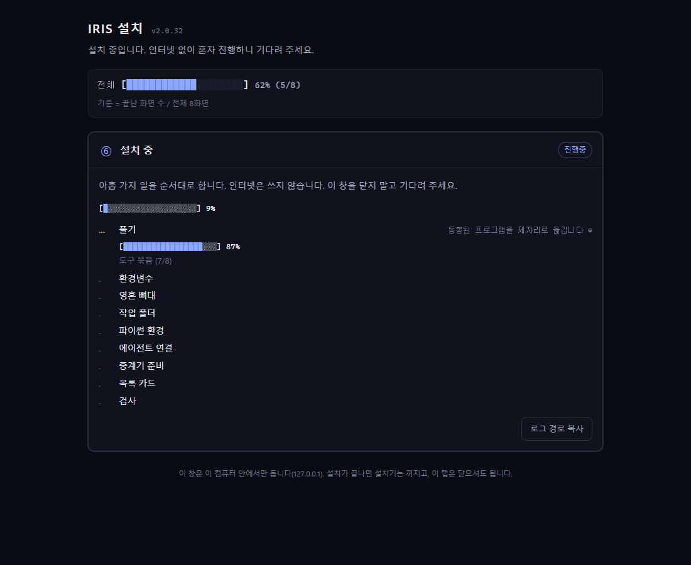
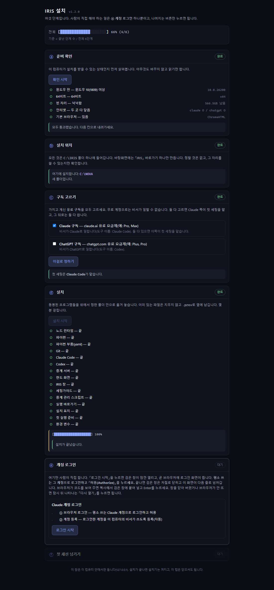

설치 안내
설치기의 화면이 차례로 무엇을 하는지, 그리고 중간에 멈췄을 때 무엇을 하면 되는지 적었습니다.
시작하기 전에
홈에서 zip을 내려받아 아무 곳에나 압축을 풀고 IRIS-설치.cmd를 두 번 클릭합니다. 검은 창이 잠깐 보였다가 브라우저에 설치 화면(127.0.0.1:3460)이 열립니다.
준비 확인
윈도우 버전, C 드라이브 여유 공간, 인터넷 연결을 자동으로 확인합니다. 모자라는 것이 있으면 무엇을 하면 되는지 그 자리에 적힙니다.

설치 위치
IRIS는 항상 C:\IRIS에 설치됩니다. 이미 있으면 설치기가 업데이트 모드로 바뀌고, 여러분의 자료는 절대 덮어쓰지 않습니다.

구독 고르기
가진 것을 표시합니다: Claude, ChatGPT, 또는 둘 다. 둘 다면 Claude Code가 첫 세팅을 주도합니다.

설치
동봉된 런타임과 IRIS 창을 풀고, Claude Code를 npm에서 내려받습니다. 약 1 GB, 수 분이 걸립니다.

로그인과 인수인계
브라우저에 구독 계정의 로그인 페이지가 한 번 열립니다. 끝나면 IRIS 창이 열리고, 비서가 나머지 세팅을 이어받습니다.

업데이트
설치가 끝난 뒤 새 판이 나오면 IRIS 창의 설정 → 업데이트에 표시됩니다. 판이 있으면 그 절 위쪽의 「업데이트」 단추를 누르세요 — 내려받기와 검사가 끝나면 확인 카드가 뜹니다. 확인하면 열려 있던 세션이 모두 끝나고 새 판이 적용된 뒤, 창이 다시 열리며 그 세션들이 자동으로 이어집니다.
막혔을 때
윈도우가 알 수 없는 앱이라고 경고합니다
IRIS-설치.cmd는 서명된 .exe가 아니라 평범한 스크립트라 SmartScreen이 경고할 수 있습니다. 「추가 정보」 → 「실행」을 누르세요. 이 스크립트는 동봉된 Node.js를 시작할 뿐입니다.
로그인 창이 뜨지 않습니다
뒤에 열린 브라우저 탭이 있는지 보세요. 1분이 지나도 없으면 설치 화면의 「다시 시도」를 누릅니다. 로그인 단계는 몇 번을 반복해도 안전합니다.
다른 문제가 생겼습니다
기록은 C:\IRIS\_agent\shared\package-install.log에 있습니다. 그 파일의 마지막 줄들을 GitHub 이슈에 붙여 주세요. 비밀 정보는 들어 있지 않습니다.
지우기
트레이에서 IRIS를 끄고 C:\IRIS 폴더와 바탕화면 바로가기를 지우면 끝입니다.